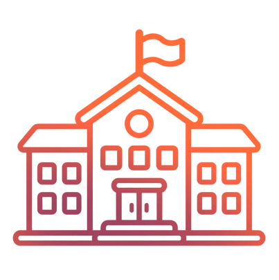
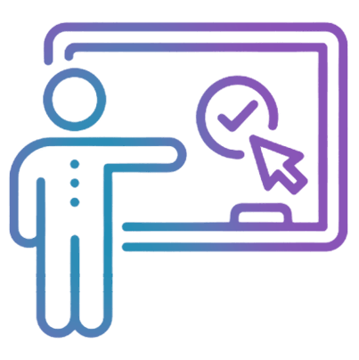
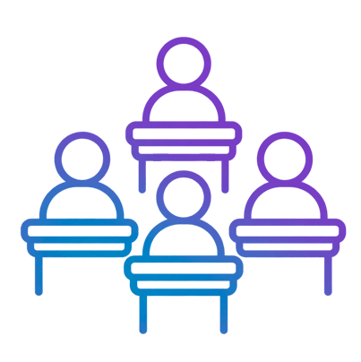
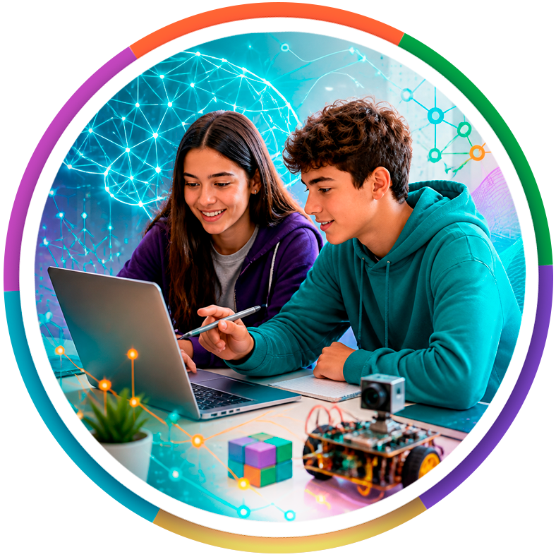
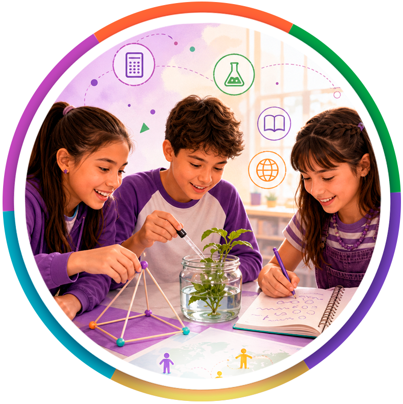
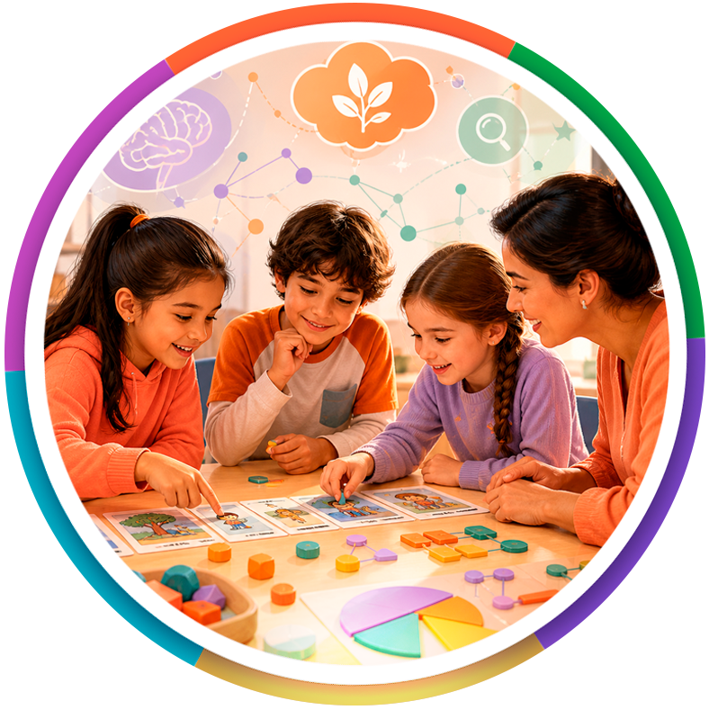
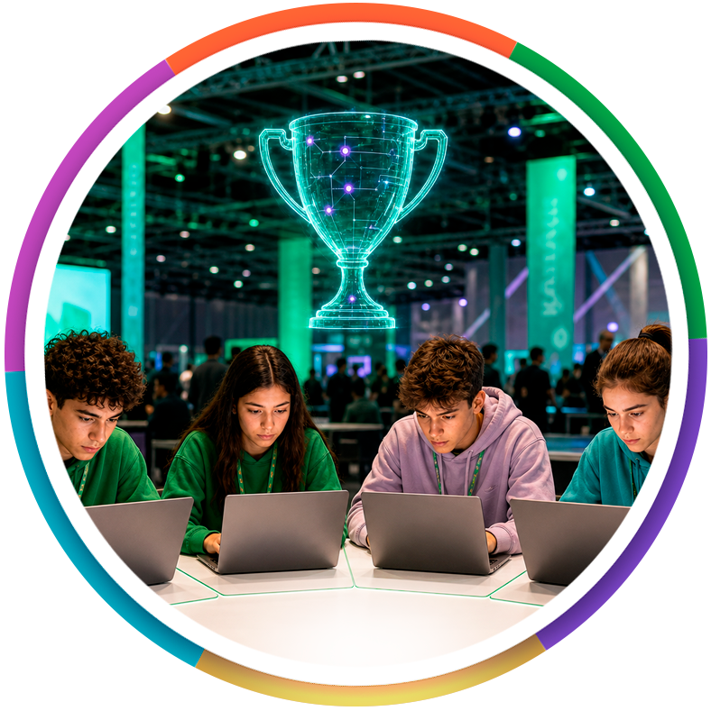
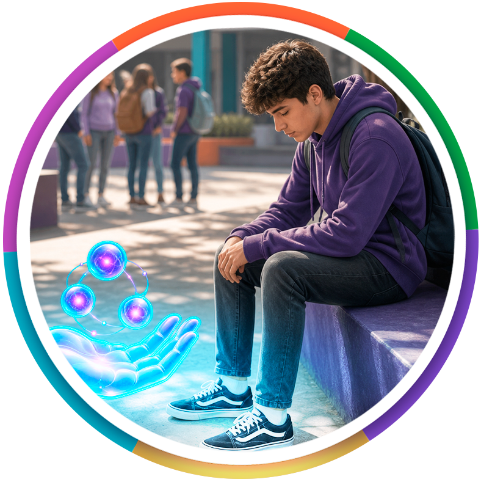

Potencia para aprender, crear y pensar con IA


 Evidencia
Evidencia
Aprendizaje real, evidencia visible.


Instituciones educativas

Docentes participantes

Estudiantes alcanzados
Creaciones curriculares con IA
Tamaño de efecto (Hedges g)
 Programas
Programas
Programas de Mendoza Aumentada
Certificación laboral en Inteligencia Artificial
4° y 5° año Nivel SecundarioDe la escuela mendocina al mundo laboral.
Los estudiantes egresan como Operadores Junior en Inteligencia Artificial, con competencias para trabajar, crear y producir con tecnología de forma crítica y responsable.

Contenidos con criterio humano
Problemas complejos
con IA
Agentes digitales que aceleren procesos

Críticamente frente a la tecnología
Pensamiento interdisciplinario con Inteligencia Artificial
1°, 2° y 3° año Nivel SecundarioConectar saberes para resolver desafíos reales.
Más de 200 contenidos curriculares se organizan en rutas de aprendizaje para comprender, conectar saberes y resolver desafíos reales con IA segura y guiada.


Pensar con lógica y modelar situaciones
Explorar, indagar y entender el mundo
Actuar con compromiso ético y ciudadano
Comunicar, argumentar y comprender miradas
Refuerzo de aprendizajes fundamentales
Lengua y Matemática Nivel PrimarioComprender antes que memorizar.
Un modelo para la escuela primaria que integra pedagogía, tecnología y neurociencia para fortalecer los aprendizajes fundamentales desde el inicio.


Curiosidad como punto de partida
Producciones propias con sentido
En profundidad antes de formalizar

Dudas que guían el aprendizaje
Rentrenamiento de competencias en el hogar
Entrenamiento de competencias en el hogarAprender más allá de la escuela.
Experiencias con IA segura que conectan escuela y hogar para fortalecer habilidades fundamentales en contextos reales y cotidianos.


Propone experiencias y desafíos
Acompaña el aprendizaje
Participa del ecosistema

Entrena competencias clave
Prevención del bullying
Convivencia escolarComprender, reflexionar y actuar.
Una política pública innovadora de convivencia escolar que combina narrativa inmersiva, Inteligencia Artificial y pedagogía emocional desde una mirada preventiva y transformadora.

Comprender su experiencia
Reconocer su capacidad de actuar
Diálogo guiado con IA educativa

Reflexionar sobre sus acciones
Entrenamiento para docentes en Inteligencia Artificial
Docentes Nivel SecundarioIntegrar IA no es delegar el pensamiento, sino ampliarlo.
Un recorrido para incorporar IA de forma pedagógica, crítica y situada, como aliada de la planificación, el pensamiento y el aprendizaje.
Liderar y acompañar la experiencia
Crear experiencias de aprendizaje
Estudiantes que crean y consolidan

Fortalecer la reflexión
Galería
Creaciones curriculares con IA
FlexClass
Transformamos la curiosidad en creación significativa

 Seguridad
Seguridad
IA segura, ética y protegida

Segura para los chicos
Qué logra el docente
Evidencia auditable

 Manifiesto
Manifiesto
No reemplazamos la inteligencia humana; la potenciamos.
Voces
Voces de Mendoza Aumentada

 Pisatón
Pisatón
Participamos activamente en el entrenamiento de los alumnos inscriptos en Pisatón 25/26
Reconocimientos
Reconocimientos
Contacto